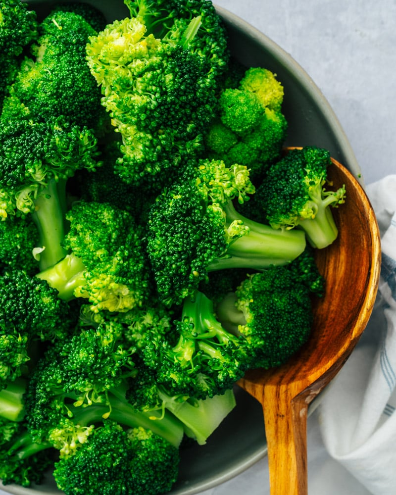

Blanched Broccoli

Description
Blanched broccoli is a quick, healthy snack that's perfect for a weeknight meal!
Ingredients
- Broccoli head
- Salt
- Sesame seeds
Steps
- Separate broccoli head into stems and florets
- Remove tough outer skin on stems and slice into medium thickness chunks
- Lightly salt and boil water, then add stems
- When stems are almost soft, add florets
- Cook until the florets are tender, then strain and add sesame oil